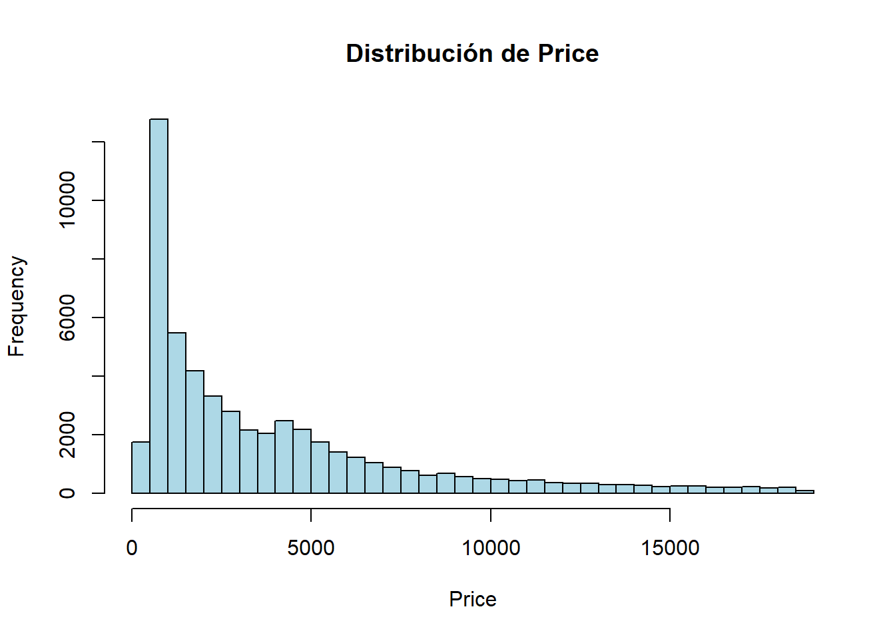
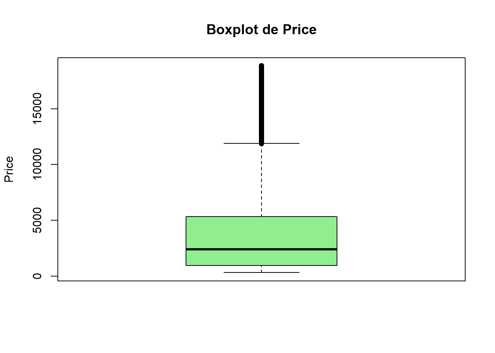
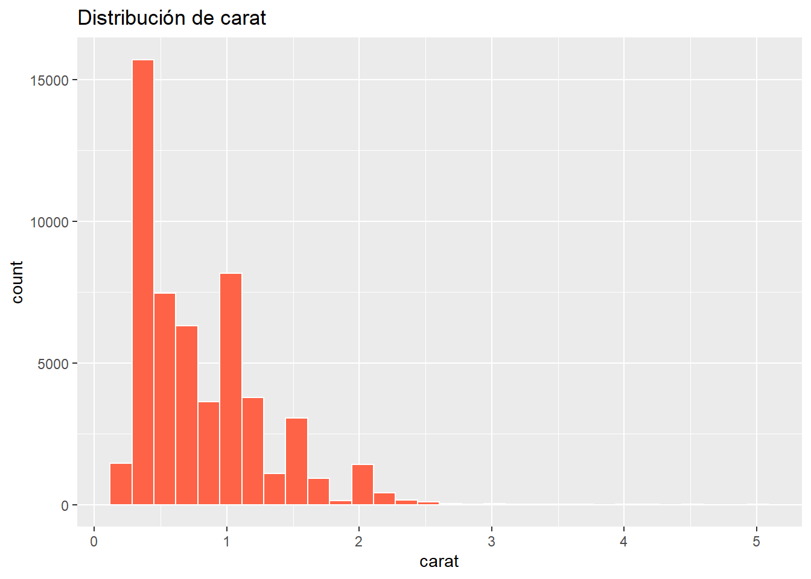
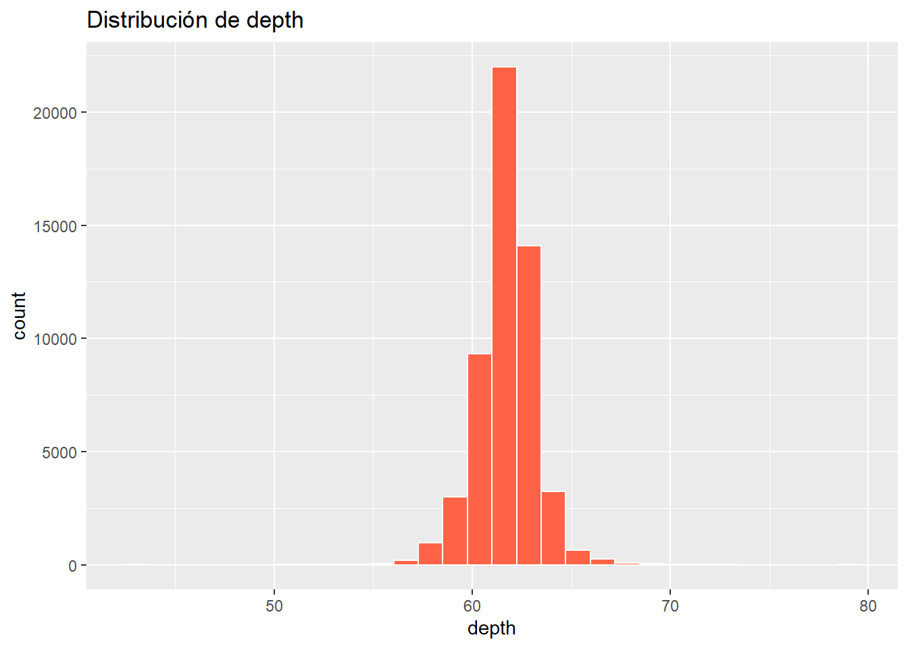
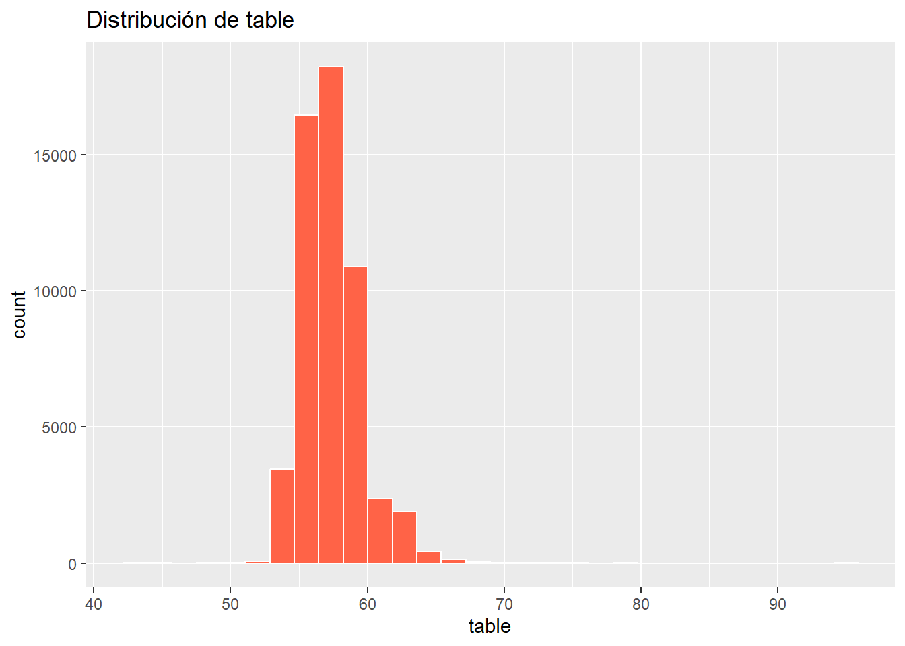
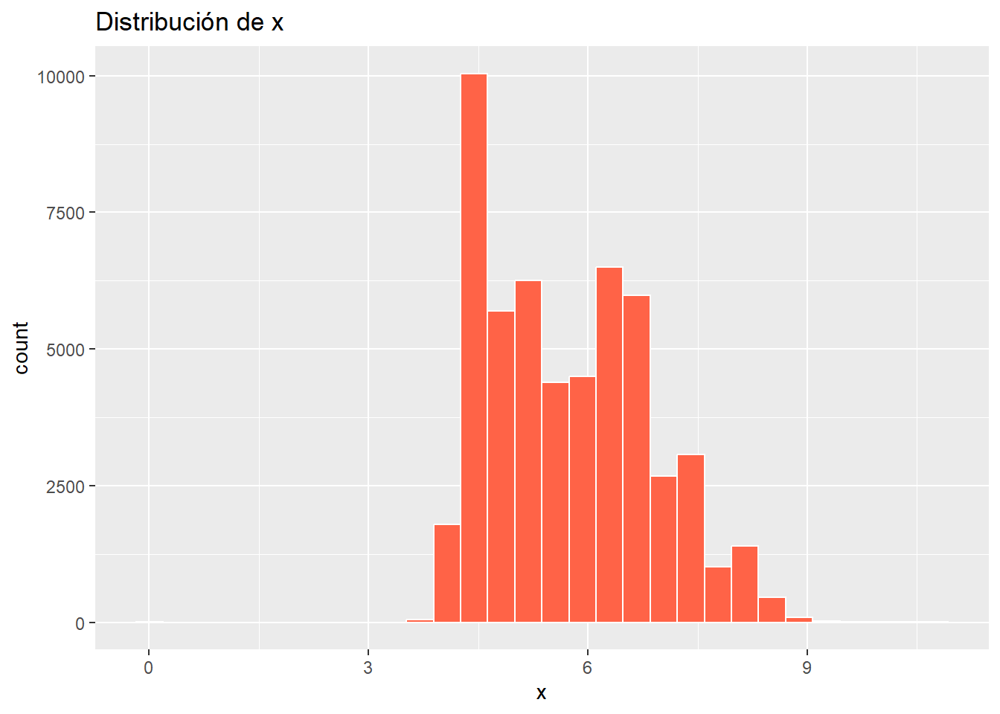
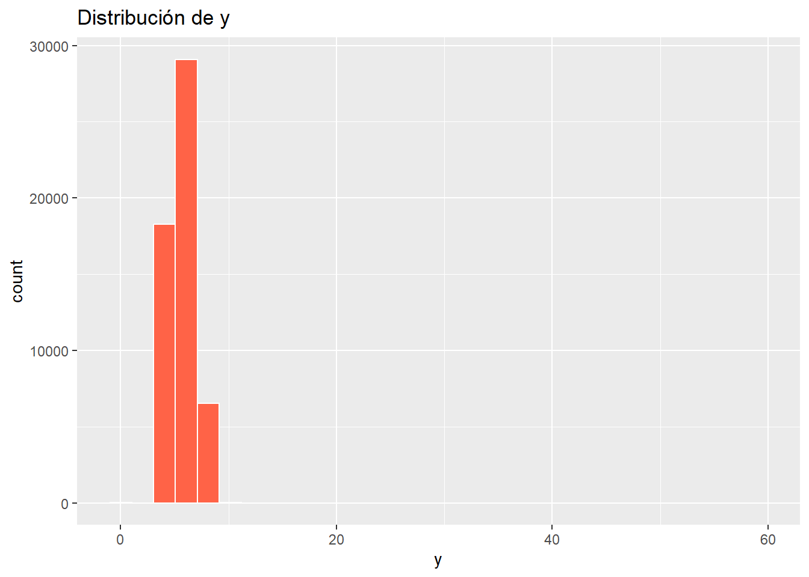
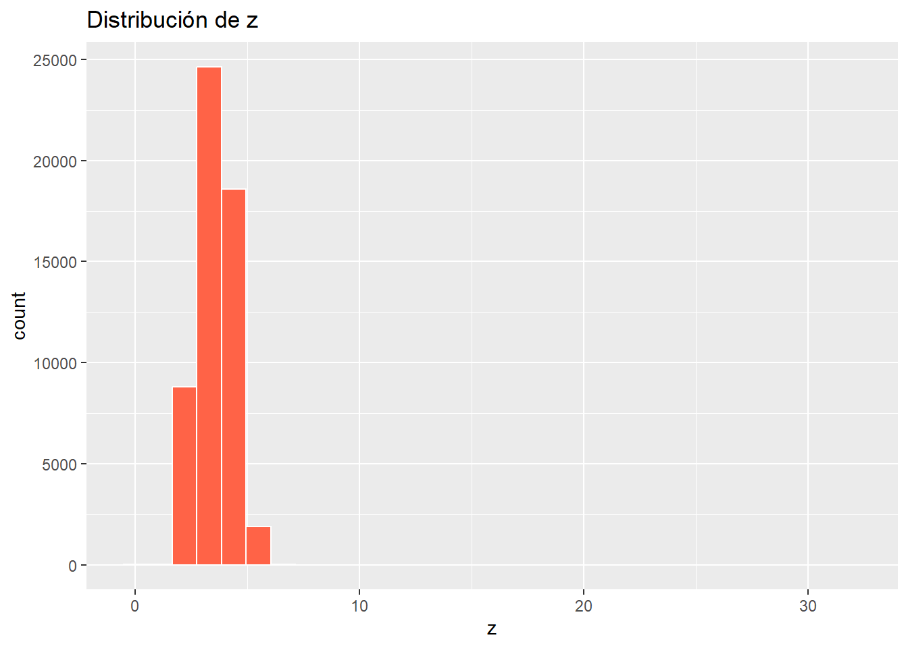
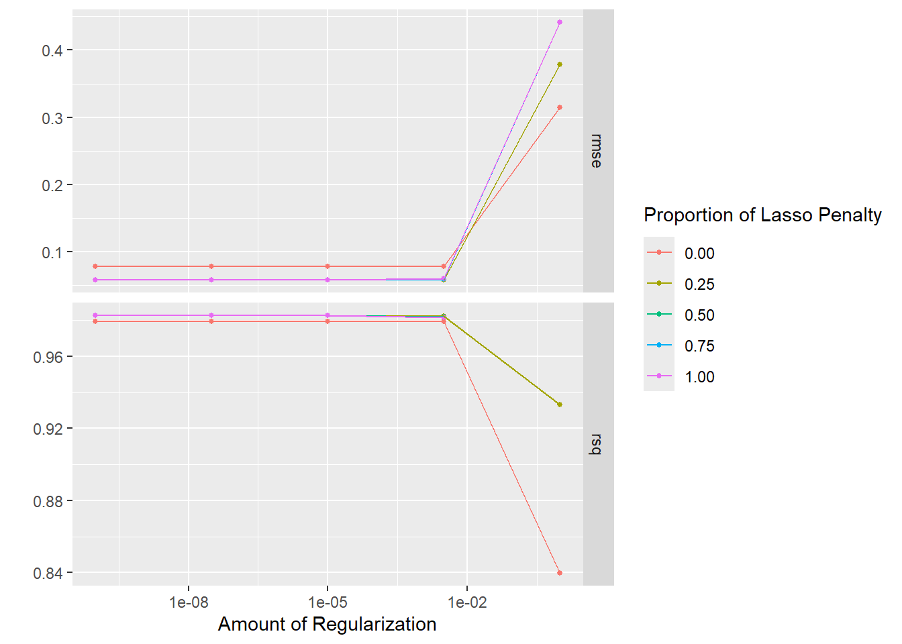
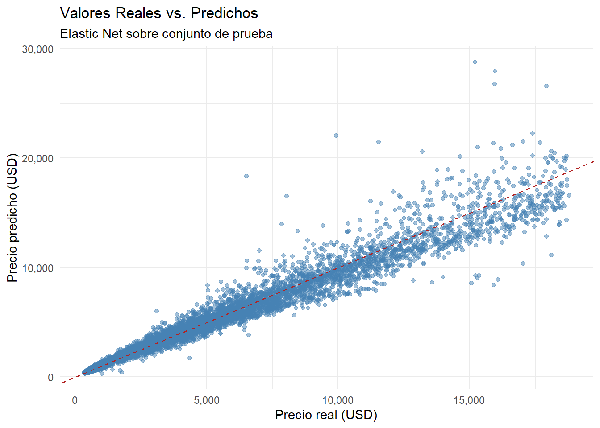

hist(datos$price, breaks =50,main ="Distribución de Price",xlab ="Price", col ="lightblue")

boxplot(datos$price,main ="Boxplot de Price",ylab ="Price", col ="lightgreen")

Asimetría positiva moderada-fuerte → predominan precios bajos/medios, con unos pocos diamantes muy caros
datos <- datos |>mutate(price10 =log10(price))
-
¿Existen otras variables numéricas que presenten esta característica?
vars <-c("carat", "depth", "table", "x", "y", "z")for (v in vars) {print(ggplot(diamonds, aes_string(x = v)) +geom_histogram(fill ="tomato", color ="white") +labs(title =paste("Distribución de", v)) )}
Warning: `aes_string()` was deprecated in ggplot2 3.0.0.
ℹ Please use tidy evaluation idioms with `aes()`.
ℹ See also `vignette("ggplot2-in-packages")` for more information.
`stat_bin()` using `bins = 30`. Pick better value `binwidth`.

`stat_bin()` using `bins = 30`. Pick better value `binwidth`.

`stat_bin()` using `bins = 30`. Pick better value `binwidth`.

`stat_bin()` using `bins = 30`. Pick better value `binwidth`.

`stat_bin()` using `bins = 30`. Pick better value `binwidth`.

`stat_bin()` using `bins = 30`. Pick better value `binwidth`.

RTA. Si. Las variables numéricas presentan asimetría y dispersión
Pre procesamiento: En mi opinión es más interesante dejar de lado las variables dummies, ya si se transforman a 0 y 1 no van a aportar rangos amplios al análisis.
datos_reci <-recipe(price10 ~ carat + table + cut + color + clarity, data = datos_train) |>step_log(carat, base =10) |>step_log(table, base =10) |>#step_log(depth, base = 10) |> step_normalize(all_numeric_predictors()) |>step_dummy(all_nominal_predictors()) tidy(datos_reci)
Por qué el paso de normalización resulta estrictamente indispensable al trabajar con modelos regularizados como Lasso, Ridge o Elastic Net?
RTA: Primero, que es normalización? es el proceso de llevar todas las variables numéricas a una misma escala. Segundo, cómo se hace? restando la media y la desviación estandard, o bien reescalando a un rango fijo como [0,1]. Terceros, para que se hace? En un ejemplo de dos variables como edad (entre 20 y 70) y otra como ingresos (entre 10.000 y 200.000), edad tiene un rango de 50 e ingresos tiene 190.000, las penalizaciones afectarían más a las variables con valores más grandes y sesgarían el modelo
Ejercicio 2. Continuando
1 Defina la especificación de un modelo elastic net . Configure los hiperparámetros correspondientes para ser calibrados
→ A | warning: A correlation computation is required, but `estimate` is constant and has 0
standard deviation, resulting in a divide by 0 error. `NA` will be returned.
There were issues with some computations A: x3
There were issues with some computations A: x9
There were issues with some computations A: x12
There were issues with some computations A: x15
There were issues with some computations A: x15
collect_metrics(elastic_net_tuned)
# A tibble: 50 × 8
penalty mixture .metric .estimator mean n std_err .config
<dbl> <dbl> <chr> <chr> <dbl> <int> <dbl> <chr>
1 0.0000000001 0 rmse standard 0.0781 5 0.000238 pre0_mod01_po…
2 0.0000000001 0 rsq standard 0.979 5 0.000172 pre0_mod01_po…
3 0.0000000001 0.25 rmse standard 0.0582 5 0.000161 pre0_mod02_po…
4 0.0000000001 0.25 rsq standard 0.983 5 0.0000669 pre0_mod02_po…
5 0.0000000001 0.5 rmse standard 0.0582 5 0.000159 pre0_mod03_po…
6 0.0000000001 0.5 rsq standard 0.983 5 0.0000644 pre0_mod03_po…
7 0.0000000001 0.75 rmse standard 0.0582 5 0.000161 pre0_mod04_po…
8 0.0000000001 0.75 rsq standard 0.983 5 0.0000646 pre0_mod04_po…
9 0.0000000001 1 rmse standard 0.0582 5 0.000165 pre0_mod05_po…
10 0.0000000001 1 rsq standard 0.983 5 0.0000658 pre0_mod05_po…
# ℹ 40 more rows
-
Grafique la evolución de las métricas
autoplot(elastic_net_tuned)

-
Actualice el flujo de trabajo con los mejores hiperparámetros
Construya un gráfico de dispersión de Valores Reales vs. Predichos
library(ggplot2)# Combinar valores reales y predichosresultados_test <- datos_test |>mutate(price_pred = pred_test$price_pred)# Gráfico de dispersiónggplot(resultados_test, aes(x = price, y = price_pred)) +geom_point(alpha =0.5, color ="steelblue") +geom_abline(intercept =0, slope =1, color ="firebrick", linetype ="dashed") +scale_y_continuous(labels = comma) +# eje Y en formato legiblescale_x_continuous(labels = comma) +# eje X también en formato legiblelabs(title ="Valores Reales vs. Predichos",subtitle ="Elastic Net sobre conjunto de prueba",x ="Precio real (USD)",y ="Precio predicho (USD)" ) +theme_minimal()

-
8. ¿Se observa un impacto significativo de la regularización en este caso? Justifique su respuesta basándose en el comportamiento de los datos.
RTA: estuve haciendo varias pruebas con distintas recipes y lo más significativo fue saltearse el logaritmo de “carat”